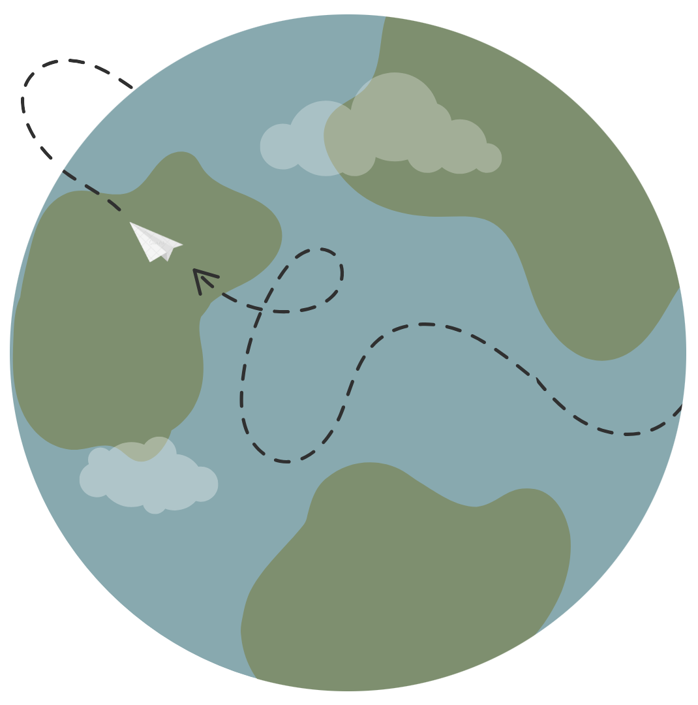

Welcome to my portfolio! I am
Ella Joyce Virayo
Geologist · GIS Specialist
Feel free to browse through my mapping projects and affiliations!
About
Me
I am Ella from Rizal, Philippines.
I specialize in hazard mapping using geographic information systems (GIS) software, particularly ArcGIS, QGIS, ILWIS, Global Mapper, and Leapfrog. I also use Python (Pandas, GeoPandas, Matplotlib, Seaborn) to make maps and visualize data.

My life in a map
Hover around to see the details!
I currently work in the Geospatial Analytics and Technology Solutions (GATES) Program of the Department of Science and Technology as a Senior GIS Specialist. Before that, I worked as a geologist for the geohazards sector!